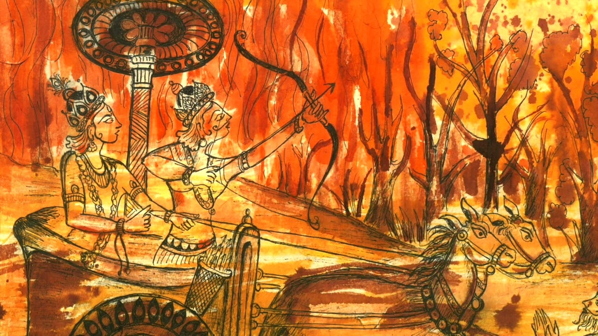
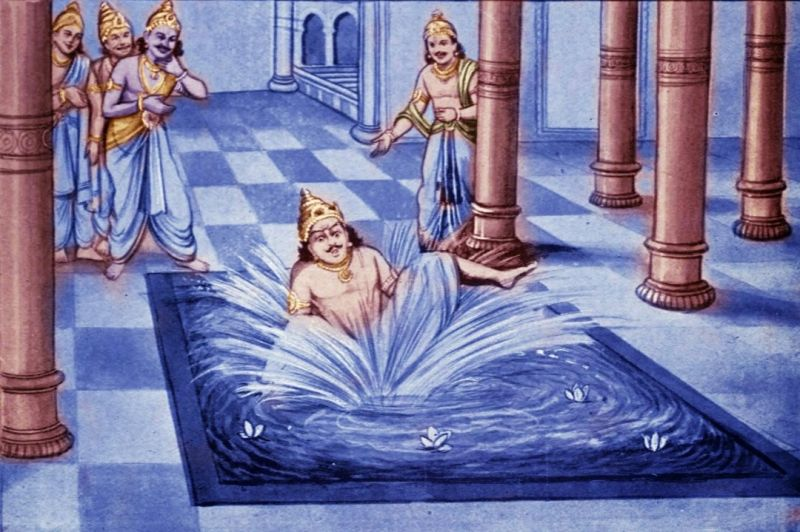

One day, while Krishna and Arjuna were talking under a tree during Krishna's visit with the Pandavas, a Brahmin approached and requested for their help. "How can we help you?" asked Krishna. The Brahmin replied, "I am Agni, the fire-god. I am very hungry to eat meat. I am tired of eating only ghee, that is concentrated butter, offered to me by the sages. Help me to eat the animals of the Khandava forest. I tried to accomplish this task by myself several times, but unfortunately, Indra, the god of weather, protects the Khandava forest. As soon as I try to burn the forest, Indra pours rain and I am extinguished. I need your help to stall Indra until I am done consuming the Khandava forest." Krishna and Arjuna agreed to help Agni. However, they did not have any celestial weapon to fight Indra. They told Agni of their limitations. Then Agni, through his divine powers, produced the celestial weapons that Krishna and Arjuna needed.

When everything was ready, Agni ignited the forest and in no time the entire forest was in flame. Indra was promptly informed and he rushed with his army to protect the Khandava forest. Krishna and Arjuna successfully kept Indra’s army at bay. Suddenly Krishna saw a demon running out of the forest and Agni was chasing him. The demon sought Arjuna's asylum. The fire-god turned back and left him with Arjuna. Finally, Agni was satisfied and thanked Krishna and Arjuna. When Agni left, the demon introduced himself to Krishna and Arjuna. "I am Maya (illusion), the architect of Vishwakarma. I possess a miraculous skill in architecture. Allow me to do something for you in return for saving my life", he said. Krishna asked Maya to build a palace for King Yudhishthira, which would be the best on the earth. Maya gladly agreed. In no time, a beautiful palace was built in Indraprastha, the kingdom of the Pandavas. The royal priest suggested that an inauguration be made for the palace before it is occupied. The Pandavas, in consultation with Krishna, decided to perform Rajasuya Yajna for its inauguration. One of the conditions of the Rajasuya Yajna is that the neighboring kingdoms must accept the supremacy of the performer, the Pandavas. The only one who objected to this was Jarasandha, the ruler of Magadh. Upon Krishna's advice, Yudhishthira sent the party of Bheema, Arjuna and Krishna to Magadh to meet Jarasandha. Jarasandha had imprisoned many kings and occupied their kingdoms by defeating them on a dual. He was blessed by Shiva and was practically invincible. The story says that Jarasandha's father was desperate for a son and had prayed to Lord Shiva. Lord Shiva was pleased and gave him a fruit. Shiva said, "Ask your wife to eat the fruit and she will soon have a child," But Jarasandha's father had two wives. He had to be fair to both and so he split the fruit, giving one half to each wife. As a result, each was born with one half of the child. A witch, named Jara, joined these two pieces and thus the son was named Jarasandha. Jarasandha's body had a vertical joint running from top to the lower end of the backbone. The only way he could be killed was to tear him apart and no one was strong enough to do that. However, Krishna knew the secret of killing Jarasandha. He revealed this secret to Bheema. Jarasandha was informed about the arrival of the party of Krishna, Bheema and Arjuna. As expected, Jarasandha refused to accept the supremacy of the Pandavas. Thus, Krishna asked him to choose one of the Pandavas to settle the matter. Jarasandha knew that he would be no match for Arjuna because of his superior skills in archery. So, he chose Bheema and was confident to defeat him in the dual. They both promised to fight each other untill death. The fight continued for many hours and finally Bheema lifted him up and flung him down with a thud. Then he tore Jarasandha’s body into two halves. Jarasandha was dead. All the kings were released from prison. They thanked Krishna and Bheema for saving their lives. They became friends of the Pandavas and accepted their supremacy. Jarasandha's son, Sahadev succeeded the throne of Magadh and became one of the strong allies of the Pandavas. All kings, including the Kauravas, were invited to the Rajasuya Yajna and the fire worship was completed with great enthusiasm. All the dignitaries honored Krishna. Bheeshma, the grandfather, spoke very highly of him and declared him as the Godhead in a human body. The only one who was not happy of Krishna's presence was Sishupal, Krishna's cousin. He was jealous of Krishna. Sishupal's mother knew of her son's shortcomings and Krishna's power. So, she made Krishna promise that he will not take any action against her son until Sishupal insulted Krishna more than one hundred times. Sishupal publicly insulted Krishna at the ceremony in spite of Bheeshma's request to stop. Krishna stayed calm until the insults exceeded one hundred times. Then Krishna cut his head off with his chakra (disc). Following the great ceremony, all the guests left with a great appreciation of the Pandavas. But Duryodhana and his maternal uncle Shakuni extended their stay as special royal guests in order to enjoy the grandeur of the beautiful palace of Yudhishthira. The palace was full of illusionary things. Duryodhanaa was repeatedly fooled and his appreciation soon turned into sheer jealousy. He said to Shakuni, "Uncle, I cannot bear the prosperity of the Pandavas. I feel like attacking them and take away all their wealth." "I know a way they can be ripped off and sent to exile" replied Shakuni in his cunning voice. Duryodhana was getting impatient to know of Shakuni’s trick. Shakuni however asked him to wait until they got out of the charming palace. "Who knows, the walls may have ears," Shakuni said with agitation
